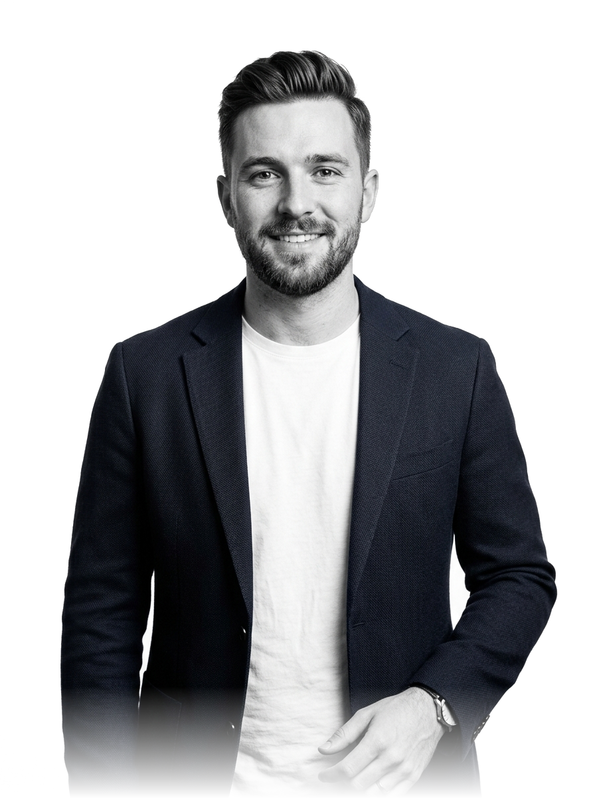

Halo, nama saya Novgeny R. Ermiawan dan saya adalah seorang

Saya adalah seorang Software Engineer dengan lebih dari 3 tahun pengalaman dalam membangun aplikasi web modern, modifikasi SIMRS, dan sistem informasi manajemen rumah sakit (SIMRS).
Bagi saya, perangkat lunak yang hebat tidak memerlukan ornamen warna-warni yang berlebihan atau gradien yang mengaburkan fokus. Kejelasan hierarki tipografi, kecepatan respon antarmuka, dan arsitektur kode yang bersih adalah fondasi sejati dari produk digital kelas dunia.
"Setiap baris kode dan setiap ukuran tipografi harus memiliki alasan fungsional. Desain yang baik bukan tentang berapa banyak dekorasi yang bisa ditambahkan, melainkan seberapa jernih sebuah solusi ketika semua kebisingan visual dihilangkan."
Kode yang efisien, waktu render sub-detik, serta arsitektur yang sanggup melayani ratusan ribu pengguna harian dengan stabil.
Pemanfaatan skala tipografi Swiss, sistem grid yang rigid, dan jarak spasi harmonis tanpa ketergantungan pada efek visual artifisial.
Sistem kode modular yang mudah diuji, terdokumentasi jelas, dan siap berevolusi seiring pertumbuhan bisnis skala enterprise.
Komunikasi jujur, pemahaman mendalam terhadap domain masalah klien, dan komitmen penyerahan target kerja sesuai tenggat.
Universitas Indonesia, Fakultas Ilmu Komputer
Fokus Riset: Arsitektur Perangkat Lunak Terdistribusi & Interaksi Manusia dan Komputer.
Spesialisasi Infrastruktur Cloud Berkinerja Tinggi
Desain Microservices & Container Orchestration
Arsitektur Informasi & Evaluasi Heuristik Antarmuka
Aktivitas di luar layar yang mengasah fokus dan kepekaan visual saya:
Kurasi 8 studi kasus arsitektur sistem, aplikasi enterprise, dan platform visual yang dibangun dengan pendekatan ketat dan performa tinggi.
Perjalanan profesional selama lebih dari 8 tahun dalam industri rekayasa perangkat lunak, serta matriks keahlian teknis terstruktur.
Memimpin arsitektur sistem informasi rumah sakit generasi terbaru (SIMRS Cloud), menetapkan standar CSS variables, dan memimpin tim beranggotakan 14 insinyur perangkat lunak.
Bertanggung jawab atas modul wealth analytics dan visualisasi portofolio real-time nasabah korporat dengan standar keamanan transaksi perbankan.
Merancang dan mengimplementasikan lebih dari 30 aplikasi web, situs arsitektur spasial, dan platform e-commerce editorial untuk klien domestik dan internasional.
Membangun antarmuka dashboard pemantauan basis data dan integrasi API RESTful berbasis Python dan JavaScript murni.
Testimoni langsung dari para pemimpin teknologi, direktur rumah sakit, dan pimpinan produk yang pernah berkolaborasi bersama saya.
Adrian memiliki pemahaman arsitektur perangkat lunak yang langka. Dia tidak hanya membangun antarmuka yang sangat indah dan cepat, tetapi juga merancang struktur kode yang mudah dipelihara oleh tim kami. Kinerja modul SIMRS kami meningkat drastis di bawah arahannya.
Dalam dunia perbankan digital di mana stabilitas dan ketepatan data adalah taruhannya, kemampuan Adrian mengeksekusi visualisasi finansial tanpa framework bloated adalah sebuah mahakarya teknis. Sangat profesional dan tepat janji.
Adrian memahami bahwa desain bukan sekadar hiasan kosmetik. Filosofi tipografinya yang ketat dan efisiensi baris kodenya membawa situs editorial kami memenangkan penghargaan internasional dan mencetak rekor skor Core Web Vitals 100/100.
Apakah Anda membutuhkan arsitektur sistem enterprise baru, perancangan antarmuka berkecepatan tinggi, atau konsultasi rekayasa perangkat lunak? Kirimkan pesan sekarang.
Isi formulir di bawah ini dan saya akan merespon dalam waktu maksimal 24 jam kerja.